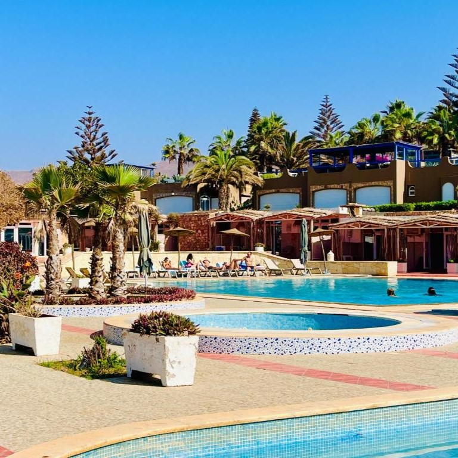
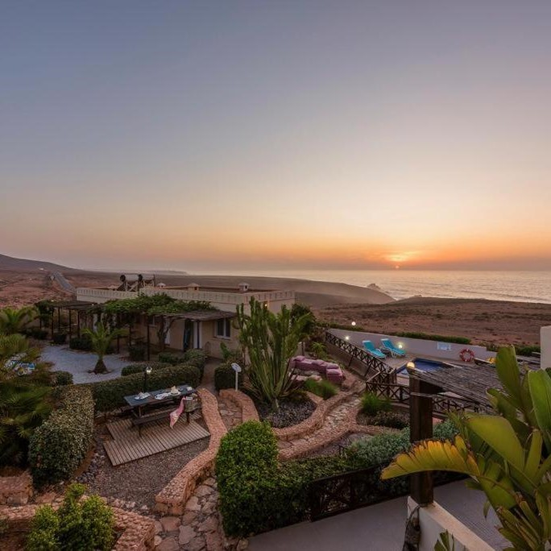
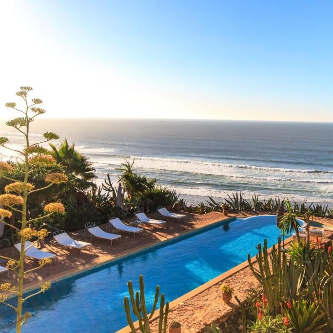

Ocean Dunes House

Ocean Dunes House à Mirleft séduit par sa proximité de la plage de Tamellalt et ses hébergements
lumineux avec balcon et vue sur la mer. Piscine, jacuzzi et restaurant multi-cuisine offrent détente
et saveurs variées. Idéal pour les voyageurs en quête de confort, plage et sérénité.
Aftas Trip

Aftas Trip à Mirleft offre un séjour actif et convivial avec piscine, jardin et prêt de vélos. Son
restaurant propose une cuisine locale variée, incluant options végétariennes et halal. Idéal pour
les voyageurs souhaitant combiner détente, découverte et activités en plein air.
Kasbah Tabelkoukt

Perchée sur une falaise face à l’océan Atlantique, Kasbah Tabelkoukt offre des chambres décorées
individuellement et des terrasses avec vue spectaculaire. Profitez de la piscine à débordement, du
hammam traditionnel et de l’accès privé aux plages désertes. Idéal pour un séjour mêlant luxe,
détente et paysages époustouflants.